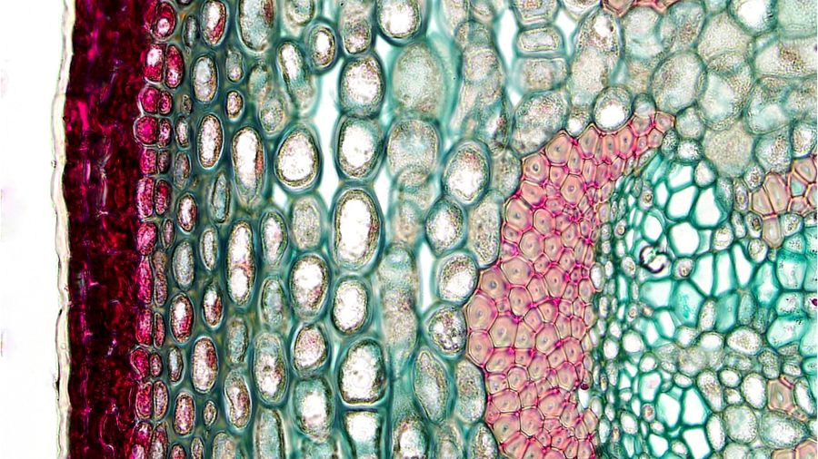
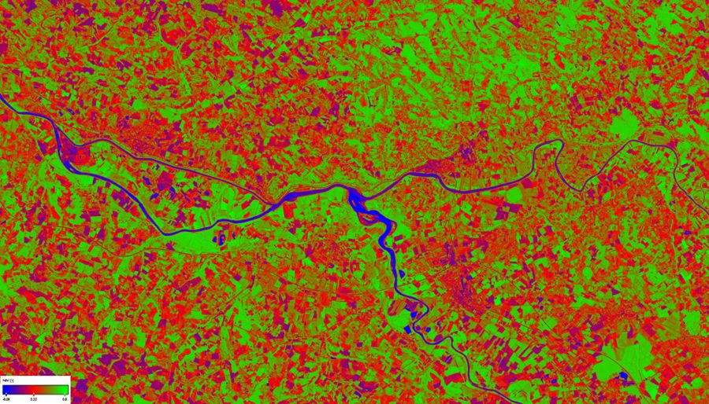
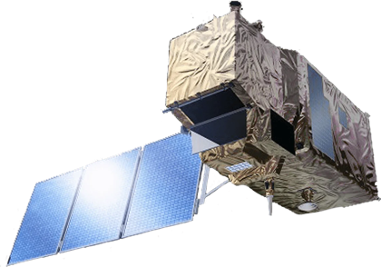

Tomato LED-NDVI: mira una planta con luz que no ves
Un fenotipador portátil de bajo coste que mide la salud de una planta combinando visión por computador y teledetección multiespectral. Proyecto de la UPCT (Reto Tomato LED-NDVI).
Soy estudiante
Animaciones, un laboratorio interactivo y preguntas para tu trabajo del taller.
Quiero profundizar
Explicación completa: la física, el aparato, el software, sus límites y la comparativa.
Qué viene en 2027
Una máquina CNC sobre cultivo hidropónico que observa, decide y actúa.
Quiero colaborar
Empresas, patrocinio y colaboración técnica: escríbenos.
¿Cómo «ve» la luz una planta?
Una hoja sana se come casi toda la luz roja y rebota la luz infrarroja. Esa diferencia es el truco de Tomato LED-NDVI. Cambia el estado de la hoja y mira qué pasa con los rayos.
El NDVI: una fórmula y un semáforo
NIR es la luz infrarroja que devuelve la hoja y Rojo es la luz roja que devuelve. Cuando la hoja se come el rojo y rebota el infrarrojo, el resultado se acerca a +1. El valor siempre está entre −1 y +1: cuanto más alto, más sana.
🟢 Bueno · NDVI ≥ 0,50
Planta sana, con mucha clorofila y actividad fotosintética alta.
🟠 Regular · de 0,20 a 0,50
Estrés moderado: falta de agua o de nutrientes, o inicio de clorosis (amarilleo). Conviene vigilarla.
🔴 Malo · NDVI < 0,20
Hoja seca, dañada o con casi nada de biomasa activa. Hay que revisarla.
En el laboratorio, los dos porcentajes son cuánta luz roja y cuánta infrarroja devuelve la hoja. Mueve los controles, o prueba los ejemplos, y mira en qué color del semáforo cae el resultado.
Laboratorio: calcula el NDVI
Así hacemos una medición
Foto en color
La cámara RGB fotografía la planta, igual que lo haría un móvil.
Marcamos la hoja
El software busca los píxeles verdes y descarta todo lo demás: tierra, maceta y fondo. Solo la hoja entrará en el cálculo.
Giramos el soporte
Giramos el brazo hasta la cámara infrarroja. En la pantalla aparece el contorno de la planta para alinearla bien.
Calculamos y puntuamos
En cada píxel de hoja aplicamos la fórmula (NIR − Rojo) / (NIR + Rojo), hacemos la media y la comparamos con el semáforo.
Para tu trabajo: glosario
NDVI
Índice de Vegetación de Diferencia Normalizada. Compara la luz infrarroja y la roja que devuelve una planta para estimar lo sana que está. Va de −1 a +1.
Fenotipado
Medir de forma sistemática cómo es y cómo está una planta (tamaño, color, salud) para estudiar cómo responde a su ambiente, como la luz, el agua o los nutrientes.
Segmentación
Separar en una imagen lo que nos interesa (la hoja) de lo que no (suelo, maceta, fondo). Nosotros lo hacemos buscando los píxeles de color verde.
Falso color
Pintar con colores que sí vemos un dato que no podemos ver. Nuestro mapa NDVI va del morado (poca vegetación activa) al amarillo (mucha).
Infrarrojo cercano (NIR)
Luz justo más allá del rojo, que el ojo humano no ve. Las hojas sanas la reflejan con mucha fuerza.
Clorofila
El pigmento verde de las hojas. Absorbe la luz roja y la azul para fabricar azúcares con la fotosíntesis.
Reflectancia
Porcentaje de luz que una superficie devuelve en lugar de absorber. En el laboratorio, los controles son reflectancias.
Edge computing
Hacer los cálculos en el propio aparato, sin enviar los datos a internet. Tomato LED-NDVI funciona sin conexión.
¿Por qué el infrarrojo delata a una planta enferma?
Si la planta sufre, tiene menos clorofila y absorbe menos rojo, y su estructura interna refleja peor el infrarrojo. El NDVI baja antes de que lo notes a simple vista.
¿Por qué usamos dos cámaras?
La normal ayuda a ver y a separar la planta del fondo. La infrarroja mide. Juntas dan una medida más fiable.
¿Dónde ganan los satélites?
Vigilan miles de hectáreas, pero cada píxel mide 10 metros o más. Tomato LED-NDVI mide planta a planta, de cerca.
Cómo citar este proyecto
Tomato LED-NDVI, Reto Tomato LED-NDVI, Universidad Politécnica de Cartagena (UPCT). Semana de la Ciencia y la Tecnología de Murcia.
Profundiza: cómo funciona Tomato LED-NDVI
Aquí explicamos el proyecto de principio a fin: el problema, la física de la luz y la hoja, el aparato, el software, sus límites y cómo se compara con otras técnicas. Es para cualquier persona curiosa; empieza fácil y se va volviendo técnico.
1 · El problema que queremos resolver
Para cuidar bien un cultivo hay que saber cómo está cada planta y saberlo pronto. Nuestros ojos solo detectan un problema cuando ya es evidente: hojas amarillas, marchitas o con manchas. Pero la planta empieza a sufrir antes, y ese cambio ya altera la luz que sus hojas devuelven, aunque no lo veamos.
Las herramientas actuales no cubren bien el caso de «una planta concreta, de cerca, en un invernadero y con poco presupuesto». Los satélites ven píxeles de decenas de metros y se ven frenados por las nubes. Los drones y sus cámaras multiespectrales cuestan miles de euros. Los sensores manuales dan un solo número, sin imagen. Tomato LED-NDVI nació en el Reto Tomato LED-NDVI de la UPCT para llenar ese hueco: medir de cerca, sin tocar ni dañar la planta y por unos 500 €.
2 · Fundamento: la luz y la hoja

La luz roja se absorbe. Las hojas verdes contienen clorofila, que absorbe con mucha fuerza la luz roja (alrededor de 660 nm) y la azul para hacer la fotosíntesis. Por eso una hoja sana devuelve muy poco rojo.
El infrarrojo cercano rebota. Dentro de la hoja, el parénquima lagunar está formado por células irregulares con huecos de aire. Cada vez que la luz pasa de la pared celular al aire, cambia de dirección, y tantos cambios acaban devolviendo hacia fuera el infrarrojo cercano (alrededor de 850 nm), que la planta casi no usa. Nuestros ojos no ven esa luz, pero un sensor sí.
Qué cambia cuando la planta sufre. Con falta de agua o de nutrientes baja la clorofila, así que la hoja absorbe menos rojo y refleja más. Si además se degrada la estructura interna, se refleja menos infrarrojo. Las dos cosas empujan el índice hacia abajo.
Es la diferencia entre el infrarrojo y el rojo reflejados, dividida por su suma. Dividir lo hace menos sensible a la cantidad total de luz que llega. Resulta un valor entre −1 y +1: el agua y las nubes dan valores negativos, el suelo desnudo se acerca a 0 y la vegetación densa suele superar 0,6. Los umbrales de Tomato LED-NDVI (0,50 y 0,20) son los que fijó el reto para este montaje.
3 · El aparato: qué lleva dentro

Raspberry Pi 5
Ordenador de 4 núcleos (Cortex-A76) que hace de cerebro: gestiona las cámaras, la pantalla y todos los cálculos con Python, OpenCV y NumPy.

SSD NVMe de 512 GB
Montado sobre la placa M.2 HAT+ (PCIe). Guarda miles de fotos y mapas a gran velocidad sin cargar la tarjeta SD.

Dos cámaras
Una RGB, que ve lo que vemos nosotros, y otra NoIR, sin el filtro que normalmente bloquea el infrarrojo. Ambas capturan a 640×480.

Filtro DB660/850
Se coloca ante la cámara NoIR y solo deja pasar dos bandas: rojo (660 nm) e infrarrojo cercano (850 nm). Bloquea el resto.

4 · Una medición paso a paso
Poner la planta
Se coloca la planta en el escenario controlado, con fondo negro mate para evitar reflejos. Se escribe su identificador, por ejemplo 001_TL.
Foto RGB y máscara
Se fotografía en color. El software detecta qué píxeles son hoja y crea una máscara. La pantalla ya muestra la planta resaltada con un contorno verde.
Girar y alinear
Se gira el soporte hasta la cámara NoIR. La silueta de la foto RGB se dibuja sobre la imagen infrarroja en directo, para alinear la planta a mano.
Cálculo del NDVI
Se calcula el índice en cada píxel y, mientras alineas, la pantalla muestra el valor medio en vivo. Al capturar, se fija la medida.
Mapa y nota
Se pinta el mapa en falso color y se clasifica la planta como buena, regular o mala según el valor medio.
Guardado
Se guardan las dos imágenes en el SSD y una entrada en el historial con fecha, hora, valor y estado.
5 · El software en detalle
Segmentación por color
La foto RGB se pasa al espacio HSV (tono, saturación y brillo), que separa el color de la intensidad. Se consideran planta los tonos verdes: H entre 25 y 95 (escala de OpenCV, de 0 a 179), con S y V de al menos 30. Después, una apertura y un cierre morfológicos (kernel de 5 píxeles, 2 iteraciones) quitan el ruido y rellenan huecos como nervios y reflejos.
Solo cuenta la hoja
El NDVI se calcula en toda la imagen, pero la media final se hace solo sobre los píxeles de la máscara. Así la tierra, la maceta o el fondo no falsean el resultado. Fuera de la máscara, el mapa se pinta en gris oscuro.
Radiometría del sensor NoIR
Con el filtro dual, la matriz de color de la cámara (Bayer) responde así: el canal rojo (R) recoge los 660 nm y el azul (B) recoge el infrarrojo de 850 nm, porque su tinte es transparente al infrarrojo. Por eso aquí el NIR es B y se usa NDVI = (B − K·R) / (B + K·R). El factor K = 0,50 es empírico: equilibra la respuesta distinta de cada canal y se puede ajustar. El balance de blancos va desactivado y las ganancias fijas, para no alterar la proporción entre canales.
Mapa en falso color
El valor de −1 a +1 se reparte en 256 niveles y se pinta con la paleta Viridis (de morado a amarillo): los tonos amarillos son vegetación activa y los morados, poca o ninguna.
Clasificación
Bueno si la media es ≥ 0,50; Regular si está entre 0,20 y 0,50; Malo si es < 0,20. En la interfaz se muestra con el color del semáforo.
Registro de datos
Cada medida añade una entrada a un archivo JSON local (registro.json) y guarda las imágenes en el SSD. Desde la pantalla se puede buscar por planta, filtrar por estado, ver las fotos o borrar medidas. Todo funciona sin conexión a internet.
{
"id_planta": "001_TL",
"fecha": "25/03/2026", "hora": "10:42:07",
"ndvi": 0.6123, "estado": "BUENO",
"archivo_rgb": "..._RGB.png",
"archivo_ndvi": "..._NDVI.png"
}
Ejemplo ilustrativo de una entrada del historial.
6 · Límites y mejoras
No es una medida calibrada
El NDVI de Tomato LED-NDVI es un índice relativo útil para comparar plantas y seguir su evolución, no un valor absoluto como el de un instrumento calibrado con un panel de reflectancia de referencia. Calibrar con un panel es una mejora natural.
Depende de la iluminación
Hace falta una luz que tenga infrarrojo cercano (el Sol o luminarias adecuadas). Con luz sin infrarrojo, el canal NIR queda vacío y el cálculo no tiene sentido. Por eso la pantalla de depuración muestra los valores medios de cada canal.
Alineación entre cámaras
Las dos cámaras no ven exactamente lo mismo, porque se cambia de una a otra girando un soporte. La silueta guía mejora la alineación, pero sigue siendo manual y puede haber pequeños desajustes.
Umbrales heurísticos
Los umbrales 0,50 y 0,20 son una clasificación práctica del reto, no una validación biofísica para todas las especies. Una especie con hojas muy amarillas o azuladas puede necesitar ajustar el rango HSV.
7 · Frente a otras escalas


| Sistema | Coste | Resolución | Frecuencia | Limitaciones |
|---|---|---|---|---|
| Satélite (Sentinel-2, Landsat) | Gratis | 10–30 m/píxel | 5–12 días | Nubes; inútil en invernadero; sin planta individual |
| Sensor manual (GreenSeeker) | 1.500–3.500 € | Puntual | Manual | Un número, sin mapa |
| Cámara multiespectral de dron | 3.500–15.000 €+ | ≈ 1–5 cm/píxel | Por vuelo | Normativa, clima y procesado posterior |
| Tomato LED-NDVI | ≈ 500 € | Nivel de hoja | Tiempo real | Solo escaneo proximal |
Agricultura de precisión automatizada para cultivo hidropónico
El siguiente paso es una máquina CNC sobre un cultivo hidropónico, con un cabezal multiherramienta que se desplaza hasta cada planta y registra su estado y su crecimiento en una base de datos. Con esa información, la Raspberry Pi orquesta de forma automática el riego, la solución nutritiva y el resto de tareas del cultivo.
1 · Observar
Las cámaras viajan en el cabezal hasta cada planta y la miden una a una.
2 · Registrar
Estado, crecimiento y análisis en una base de datos por planta.
3 · Decidir
La Raspberry orquesta el sistema con los datos acumulados.
4 · Actuar
Control automático del riego y de la solución nutritiva.
El resultado es un cultivo que se vigila y se cuida solo, planta a planta, con decisiones basadas en datos.
Buscamos personas y entidades que quieran acompañarnos: hablemos.
Construyamos la versión 2027 juntos
Si te interesa colaborar, patrocinar o aportar material o conocimiento, estaremos encantados de hablar contigo. Da igual que seas una empresa, una institución, un centro educativo o una persona a título individual: toda ayuda suma.
Dr. Cristóbal Javier Solano Navarro
Profesor coordinador del proyecto
cristobal.solano@upct.es
José Manuel Gamoneda Martín
Alumno coordinador del proyecto
josemanuel.gamoneda@edu.upct.es